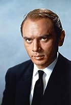
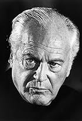
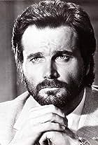
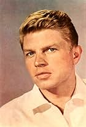
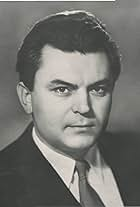
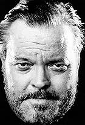

EX-YU FILMS
Your Gateway to the Rich Cinematic History of EX-Yugoslavia
Movie description
"Bitka na Neretvi" (The Battle of Neretva) is a classic war film directed by Veljko Bulajić. Set against the backdrop of World War II, the movie depicts the epic battle that took place along the Neretva River in Yugoslavia. It follows the struggle of partisan forces as they attempt to escape the encirclement of the German army, facing numerous challenges and hardships. With a stellar ensemble cast and stunning cinematography, "Bitka na Neretvi" is a gripping war drama that explores the resilience and sacrifice of those who fought in one of the most challenging battles of the war. Read more
"Bitka na Neretvi" (The Battle of Neretva) is a monumental war film directed by Veljko Bulajić, released in 1969. It stands as one of the most ambitious productions in Yugoslav cinema history and is renowned for its grand scale and epic storytelling. The film is set during World War II and portrays the dramatic events surrounding the Battle of Neretva, a pivotal conflict between the Yugoslav Partisans and the Axis forces. The battle, fought in the unforgiving terrain of Bosnia and Herzegovina along the Neretva River, was a crucial turning point in the war in Yugoslavia. The storyline revolves around the Partisan resistance fighters led by Josip Broz Tito (played by Richard Burton), who find themselves encircled by the relentless German and Italian forces, led by General Löhr (played by Hardy Krüger) and Field Marshal von Weichs (played by Franco Nero). As the battle rages on, the Partisans face numerous challenges, including the need to secure a safe escape route for wounded civilians and soldiers. "Bitka na Neretvi" is a masterful exploration of the human spirit in times of war, emphasizing themes of courage, sacrifice, and solidarity. The film boasts a stellar international cast, including Yul Brynner as Vlado, Orson Welles as Chetnik Chetah, and Curd Jürgens as von Dietrich, among others. Their performances contribute to the emotional depth of the characters and the narrative. What sets this film apart is its remarkable cinematography and special effects, showcasing the grandeur of the Yugoslav landscape, with stunning visuals of the Neretva River and its surroundings. The battle scenes are meticulously choreographed and executed, immersing the audience in the chaos and brutality of war. "Bitka na Neretvi" is not only a war epic but also a tribute to the resilience and sacrifice of those who fought in one of the most challenging battles of World War II. Its enduring legacy continues to captivate audiences, making it a significant entry in the pantheon of war cinema. Show less

Top Cast


Curd Jürgens
Anthony Dawson
Ljubisa Samardzic

Franco Nero

Hardy Krüger

Sergey Bondarchuk

Orson Welles
Add a review
Reviews
Nega Balzic (5/10)
"Bitka na Neretvi" is a film of contrasts, earning a middling 5/10. Veljko Bulajić's WWII epic impresses with breathtaking cinematography and a star-studded cast, including Yul Brynner and Orson Welles. However, its uneven pacing hampers engagement, and the disjointed narrative struggles to deliver a cohesive message. While honoring wartime heroes, character development remains shallow, and the script fails to delve into their complexities. Bernard Herrmann's score stands out, injecting emotion into select moments. In summary, "Bitka na Neretvi" boasts strengths but falls short of realizing its full potential, appealing primarily to history enthusiasts but failing to achieve a higher rating.
Josip Broz Tito (10/10)
"Bitka na Neretvi" is a cinematic gem, earning a perfect 10/10. Veljko Bulajić's epic war film, set in WWII Yugoslavia, captivates with its breathtaking cinematography, heroic ensemble cast including Yul Brynner and Orson Welles, and a moving score by Bernard Herrmann. It's more than a war movie; it's a tribute to human resilience and valor. This timeless classic remains a testament to the indomitable human spirit. With its powerful storytelling, exceptional performances, and historical significance, "Bitka na Neretvi" rightfully deserves its perfect score and is a must-watch for all cinephiles.